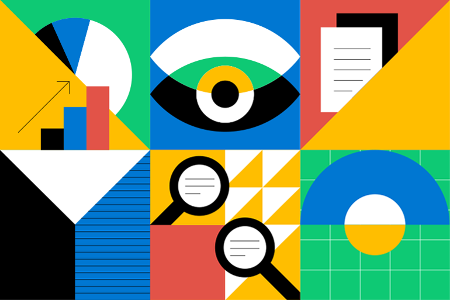
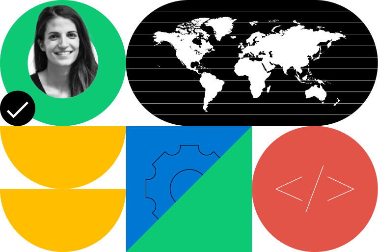
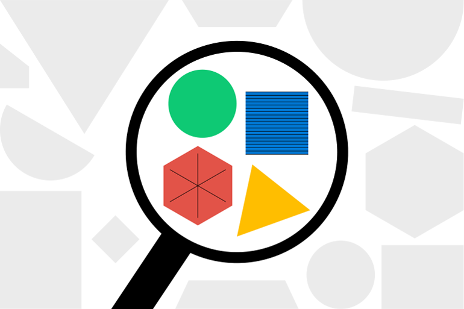
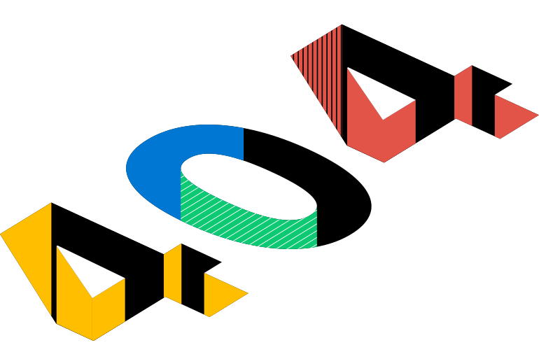
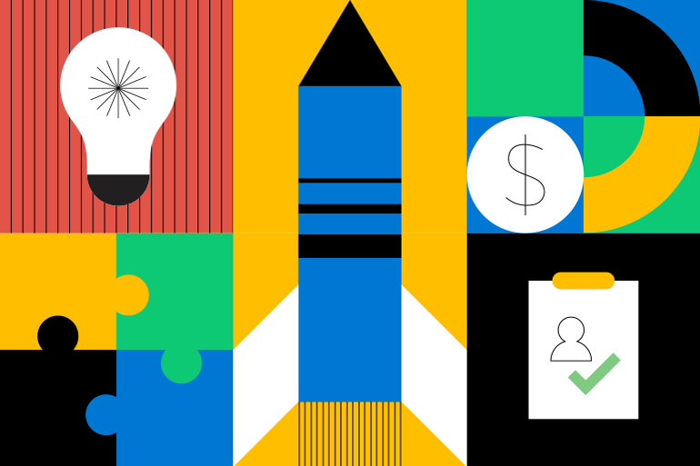
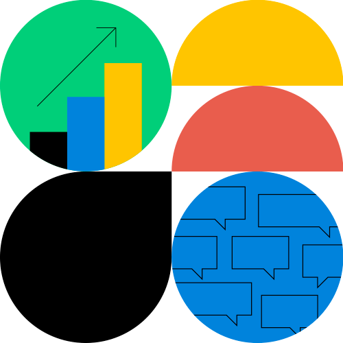
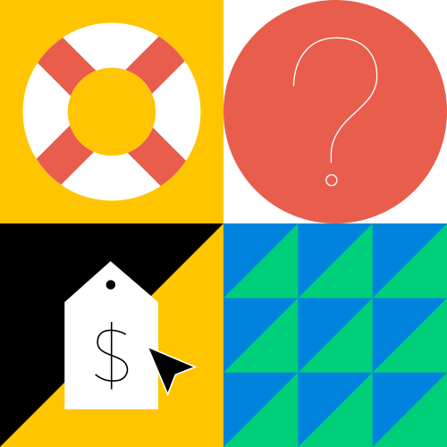

Respondent is on a mission to facilitate meaningful conversations between researchers and participants with diverse and unique perspectives from around the globe.
For Respondent, research participants are the center of quality research. You shouldn't conduct the research if you can't find the right participants. Participants can greatly improve research outcomes, leading to accurate, higher-quality decision-making. The stakes are high, and the research teams that invest in gaining a deep and contextual understanding of their target audience will build products and services that are superior to their peers.
As an integral part of the rebranding process, we redesigned the visual elements for the website, including both hero images and illustrations, as well as graphics below the fold. Over 40 graphics were redesigned to align with Respondent's new visual identity, aiming to enhance the presentation, understanding, and visual appeal of web content.
The rebranding of Respondent was inspired by the avant-garde vision of the Bauhaus, seeking functional simplicity and aesthetic harmony. The color palette was simplified, adopting clear and contrasting tones that create an appealing visual balance. Geometric shapes, a distinctive feature of the Bauhaus style, were elegantly integrated into the visual elements, conveying a sense of order and modernity.
These images accompany various sections within the website, such as "Find The Participants," "Paid Research Studies," "Recruit From Everywhere," "Launch Your First Project," "Find The Right Participants," "Recruit Participants," among others.
Find Participants
Paid Research Students

Recruit From Everywhere
Find The Right Participants
Fully Remote Team
404 Error
Recruit Participants
Launch Your First Project
About Us
Insights Into Impact
Help Center
